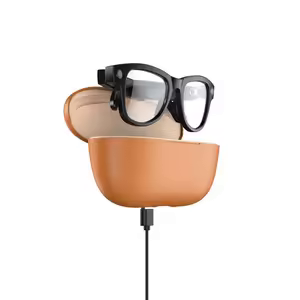
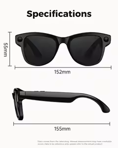

Fiche produit · conçues au Canada
Les lunettes VELA.
Micro, son et caméra dans une monture sobre. Photo et vidéo mains libres, à la voix ; aucun écran. Vos images restent sur votre ordinateur.
Les lunettes · l’application IRIS est gratuite
250 $CAD
Taxes en sus. Un seul versement, jamais d’abonnement forcé.
Précommander les lunettes — 250 $ Voir les photos
Paiement sécurisé par Stripe. Taxes selon votre province. Un vrai humain répond : contact@velaglass.ca.
Carte (Stripe) ou virement Interac à
contact@velaglass.ca.
La version et la livraison se règlent ensuite par courriel.
Livraison, retours et garantie : le détail.
Aussi : Lunettes + 12 mois du plan Pro — 489,88 $ CAD. Voir les plans IRIS.
- Micro et son
- Caméra intégrée
- Un seul paiement

En photos
La monture, sous tous les angles.
Pas de rendu 3D : ce sont les photos de l’exemplaire réel.


IRIS tourne sur votre PC Windows — il doit être allumé pour que les lunettes fonctionnent. C’est la contrepartie du « tout reste chez vous » : les lunettes portent le micro, le son et la caméra, mais c’est votre ordinateur qui écoute, répond et range vos images.
Deux versions
Une seule monture, deux verres.
Transparents pour le quotidien, teintés pour dehors. Même micro, même son, même caméra. Vous choisissez par courriel après le paiement.
La caméra
La photo, sans sortir le téléphone.
« Dis-moi Iris, prends une photo » : la caméra capte ce que vous voyez, mains libres. Un témoin s’allume dès qu’elle filme, puis l’image se range sur votre ordinateur.
Un témoin quand ça filme
Rien à votre insu : ceux d’en face voient le témoin aussi.
Les images restent chez vous
Sur votre ordinateur. Rien n’est téléversé sans votre demande.
Le son
Un casque Bluetooth, et bien plus.
Micro et haut-parleurs sont dans la monture. Windows voit les lunettes comme un casque Bluetooth : la reconnexion est automatique.
Le micro qui écoute IRIS
C’est par lui qu’IRIS entend « Dis-moi Iris » et votre demande.
Le son dans l’oreille
La voix d’IRIS, la musique, tout son du PC. Et il sert d’écouteurs Bluetooth avec n’importe quelle appli.
Dans la boîte
Trois objets, et une appli gratuite.
- 1 La monture Verres transparents ou teintés : vous choisissez par courriel après le paiement.
- 2 L’étui de charge USB-C La coque brune : les lunettes s’y posent et se rechargent. Câble fourni.
- 3 L’étui rigide La coque noire, pour transporter sans abîmer.
- 4 L’application IRIS Pas dans la boîte : à télécharger gratuitement.

IRIS marche aussi très bien sans les lunettes, avec le micro et les haut-parleurs du PC. Les lunettes ajoutent la voix dans l’oreille et la caméra.
Caractéristiques
Ce qui est vérifié — et ce qui ne l’est pas.
On n’écrit ici que ce qu’on a constaté sur l’exemplaire en main.
| Point | Ce qu’il en est |
|---|---|
| Monture | Noire, mate, branches larges. Deux versions : verres transparents ou teintés. |
| Micro | Oui. Windows voit les lunettes comme un microphone ; IRIS écoute par là. |
| Son | Oui, en stéréo : la voix d’IRIS, la musique, n’importe quel son du PC. |
| Caméra | Oui. Photo et vidéo mains libres, à la voix. Un témoin s’allume quand elle filme ; les images restent sur votre ordinateur. |
| Écran | Aucun. Rien ne s’affiche dans les verres. |
| Connexion | Bluetooth. IRIS mémorise les lunettes et rétablit la connexion toute seule. |
| Batterie | Rechargeable par l’étui, en USB-C. Autonomie non chronométrée par VELA : à confirmer. |
| Dimensions | 152 × 55 × 155 mm. Selon la fiche du fabricant — à confirmer par VELA. |
| Poids | À confirmer. Non mesuré : on l’ajoutera une fois pesé. |
| Résistance à l’eau | À confirmer. Aucun indice annoncé : à garder à l’abri de la pluie. |
| Compatibilité | Avec IRIS : Windows 10 et 11, 64 bits. En simple casque : tout appareil Bluetooth. |

Pourquoi des cases vides. On préfère la ligne vide à une autonomie ou un poids « commerciaux », jusqu’à l’avoir vérifié nous-mêmes.
Les lunettes et IRIS
Sans le logiciel, ce ne sont que des lunettes.
C’est IRIS, sur votre ordinateur, qui écoute « Dis-moi Iris », prend la photo, lit l’écran à voix haute et pilote le PC. L’application est gratuite, en français, et tout reste chez vous.
L’achat
Trois étapes, dont une à la main.
Pas de panier automatique. Vous payez, puis une personne vous répond.
-
Vous payez
Le bouton ouvre une page Stripe, les 250 $ déjà remplis. Ou par virement Interac à contact@velaglass.ca. Un seul versement.
-
Vous nous écrivez
La version voulue (transparente ou teintée) et votre adresse. On rapproche votre paiement automatiquement.
-
Vous recevez vos lunettes
On convient le délai dans le même échange. De votre côté, installez IRIS gratuitement.
Les 250 $ paient les lunettes, rien d’autre. Aucun abonnement rattaché. L’abonnement à IRIS est une autre décision, et il s’arrête quand vous voulez.
Prêt à mettre le cap ?
Un seul versement de 250 $, taxes en sus. Reçu et livraison par courriel. L’application se télécharge gratuitement.
Paiement sécurisé par Stripe. Taxes selon votre province. Un vrai humain répond : contact@velaglass.ca.
Vous venez de payer ? La suite est ici. Déjà commandé ? Suivre ma commande.
Le service d’IA en ligne des plans payants se déploie encore : certaines réponses avancées arrivent bientôt. Les commandes de base d’IRIS fonctionnent déjà sur votre ordinateur.